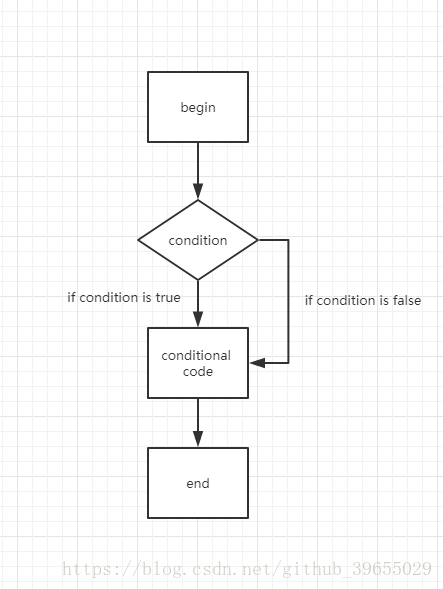
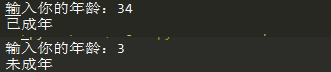
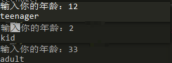
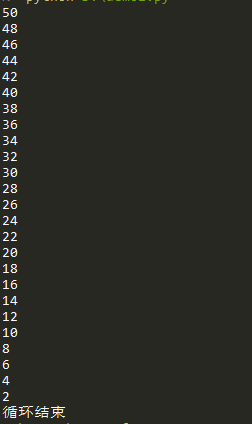
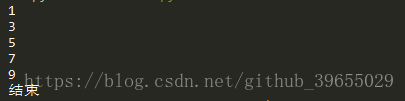
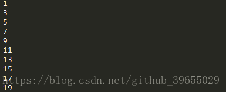

条件判断
条件语句是用来判断给定条件是否满足，并根据判断所得结果从而决定所要执行的操作，通常的逻辑思路如下图；

if <判断条件>：
<执行>
else：
<执行>age = int(input("输入你的年龄："))
if age < 18:
print("未成年")
else:
print("已成年")
if <判断条件1>:
<执行1>
elif <判断条件2>:
<执行2>
elif <判断条件3>:
<执行3>
else:
<执行4>
...age = int(input("输入你的年龄："))
if age >= 18:
print('adult')
elif age >= 6:
print('teenager')
else:
print('kid')
注意，if语句是从上往下判断的；
循环
当条件满足时，就不断循环，直到条件不再满足时即退出循环；
count = 50
while count > 0:
print(str(count))
count -= 2
print("循环结束")
sum = 0
for num in range(1, 10):
sum += num
print(str(sum))其中range()函数用于生成一个整数序列；
终止循环
num = 1
while num <= 100:
if num >= 10:
break
print(num)
num += 2
print("结束")
num = 0
while num < 20:
num += 1
if num % 2 == 0:
continue
print(num)
总结
本次相关Python中的if条件判断、for循环、while循环以及如何终止for或者while循环的介绍就到这里，如果你有更好的想法，欢迎评论共同交流！！
欢迎关注微信公众号：村雨1943；创作不易，未经同意，转载请注明出处~